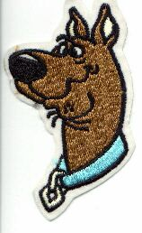

Phrost Byte 0wnz you :)
Greets 2 all u guyz in aloc 4 hacking all that stuff in the last cupl of
weeks, u no who u are!
while u guys hav been gettin in 2 .com.au, I have been getting in 2 lotz of
.milz! this is our first .mil defacemnt and its just the begining! :) :) :)
no shout outz 2 unix bowling team, thay fuq pigz!


If u r australian and interested in haking, anarqy and blowing shit up, cum join #aloc on austnet. We r a network of cyberpunkz in australia that that we produce the only all australian ezine that i gno ov that is still publishing.